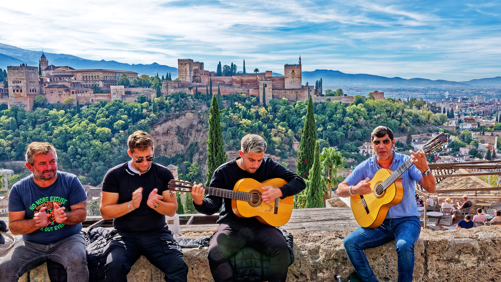
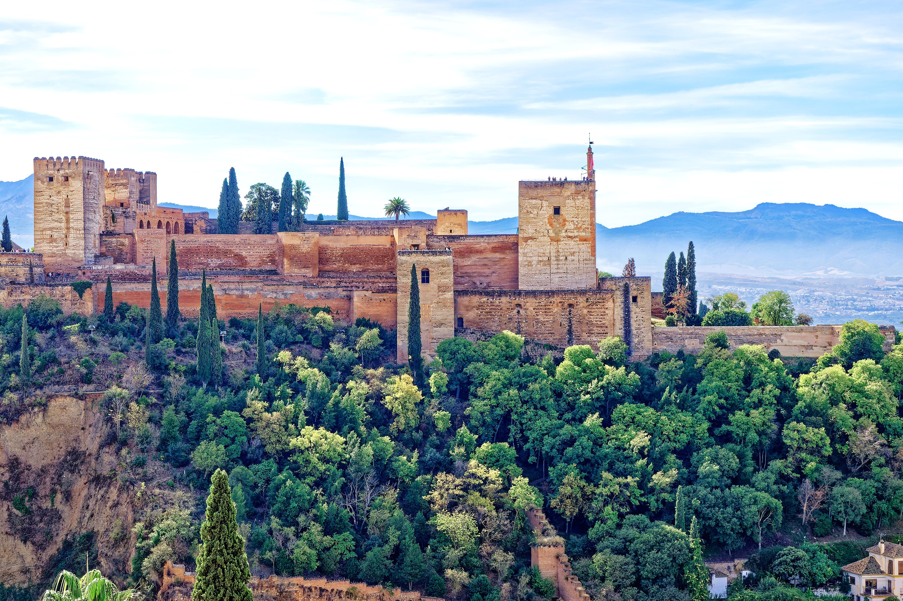
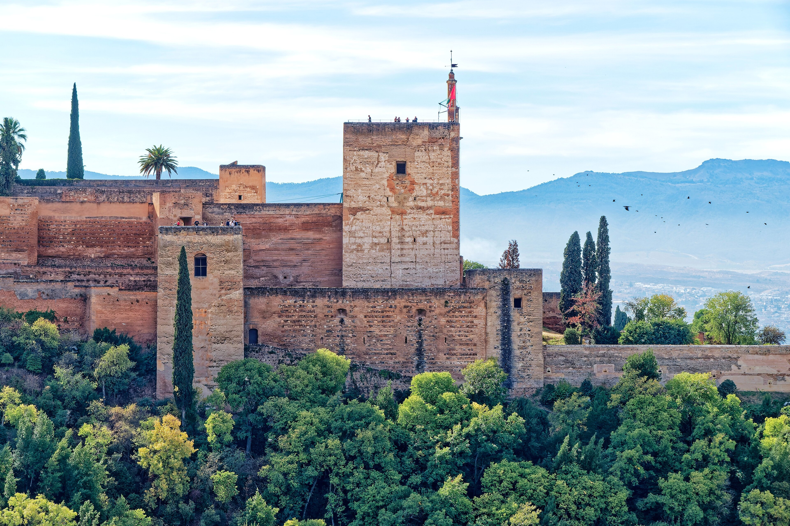
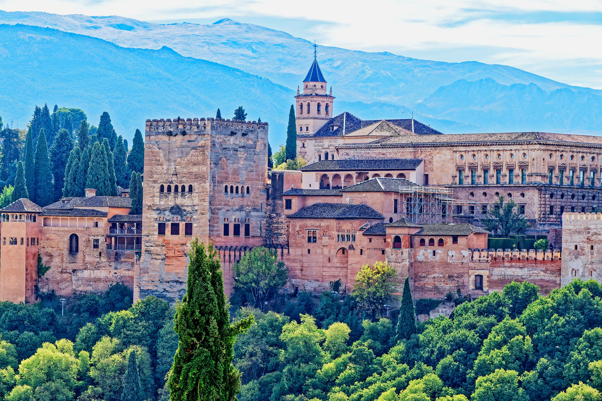
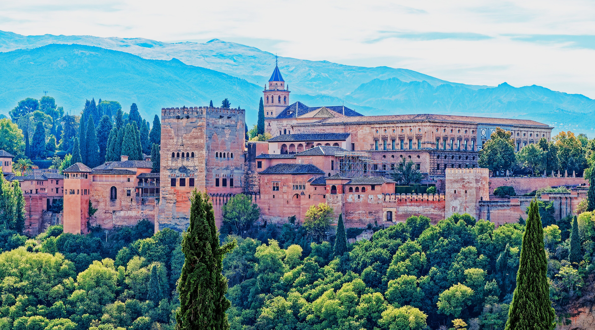
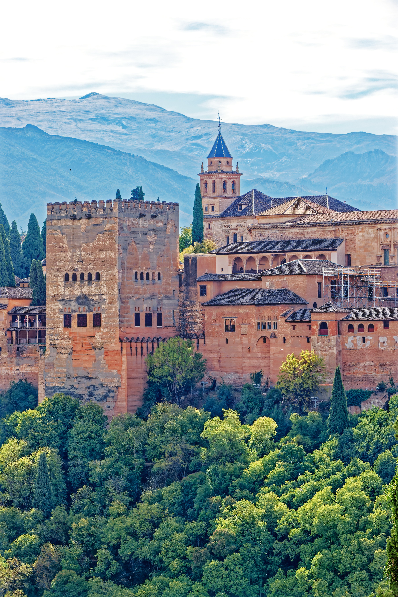
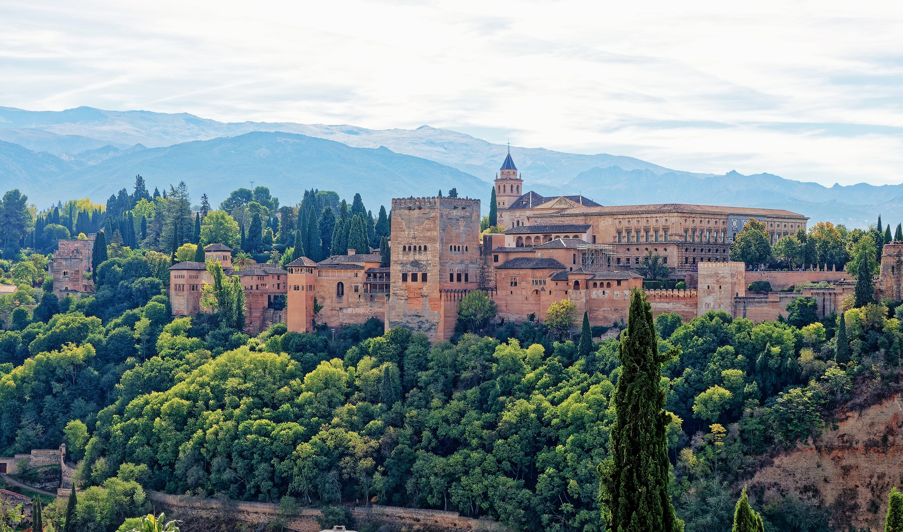

📍 Location: Granada, Autonomous Community of Andalusia, Spain
📅 Period: 11th–16th Centuries CE (Zirid, Nasrid, and Early Castilian Periods)
🏷️ Category: Cultural
⚠️ Status: UNESCO World Heritage Site (Inscribed 1984, Extended to Albayzín 1994)
📏 Significance: The solitary surviving medieval Islamic palatine city in the Western world, showcasing the apex of Nasrid architectural geometry, hydraulic engineering, and Mediterranean vernacular urbanism.

From the heights of the San Nicolás terrace across the chasm of the Darro River, the Sabika Hill appears not as a mere pedestal for architecture, but as an ancient living organism fashioned from iron-rich clay and stone. The Alhambra—Al-Qal'a al-Hamra, the Red Fortress—does not announce its interiors from without. Its outer walls are austere, massive, and deliberately impenetrable, cloaked in rammed earth that shifts in tone from ochre in the morning light to burnt umber under an evening sky. Opposite this fortress ridge climbs the labyrinthine Albayzín: an amphitheatrical hill of white lime plaster, terracotta roofs, and enclosed orchard courtyards whose geometry was dictated by the pack animal, the natural slope, and the defensive wariness of a society constantly under pressure.

Below, the Darro cuts through its rocky gorge, murmuring over cobbles, feeding the network of acequias that have pulled water across these inclines for nearly a millennium. The immediate sensory impact of Granada is sonic and thermal. One moves from the furnace dry heat of the southern Spanish summer into the chilled shade of high brick portals, accompanied everywhere by the sound of flowing water. Water here is not decorative afterthought; it is the central organizing axis, structural mortar, and acoustic screen of an entire civilization. The transition from the rugged, chalky warrens of the Albayzín to the royal enclosures across the ravine is an excursion across the fault lines of European and Islamic history, where two worlds eyed one another, traded, fought, and ultimately forged an architectural syntax found nowhere else on earth.
Entering the Alhambra through the Puerta de la Justicia, the visitor passes under a massive horseshoe arch carved with the protective open hand of Fatima, matched above by the sculpted key of authority. The light dies in the deep elbow bend of the barbican, engineered to break the momentum of mounted cavalry. When daylight returns on the interior esplanade, it illuminates an entirely unexpected interior landscape. Where northern European keeps offered damp stone halls and narrow arrow slits, the Nasrid sovereigns realized an architecture of distilled light, carved cedar, stucco lace, and polished marble courts designed to capture breezes and mirror the sky. It is an architecture of illusion, where structural stone hides behind weightless curtains of gypsum and tile, giving the impression that solid matter can dissolve into geometric harmony and sacred text.
To understand the architecture of the Alhambra, one must understand the political precarity of its builders. Following the catastrophic collapse of the Almohad Caliphate after the Battle of Las Navas de Tolosa in 1212, Islamic Spain shattered into an archipelago of defensive enclaves. City after city fell before the southward push of the Christian crowns of Castile and Aragon: Cordoba was lost in 1236, Valencia in 1238, and Seville in 1248. Amid this systematic dismantling of Islamic power, an astute regional warlord from Arjona, Muhammad ibn Yusuf ibn Nasr—popularly known as Ibn al-Ahmar ("Son of the Red")—maneuvered to secure a redoubt in the foothills of the Sierra Nevada. In 1238, Ibn al-Ahmar entered Granada, establishing the Nasrid Emirate, which would endure for two and a half centuries as the final Islamic sovereignty on the Iberian Peninsula.

Granada’s survival was an exercise in geopolitical balance. The Nasrids secured their position by declaring formal vassalage to the King of Castile, paying crippling annual tributes in raw gold imported via trans-Saharan trade routes, and occasionally providing military levies against fellow Muslim city-states. Surrounded by hostile northern Christian kingdoms and watched warily by the Marinid sultans across the Strait of Gibraltar in Morocco, the Nasrids poured their wealth and intellectual energy into a self-contained palatine fortress atop the Sabika Hill. They repurposed the ancient, semi-ruined Zirid fortifications that had crowned the hill since the 11th century, constructing a fully autonomous royal city equipped with its own administrative core, barracks, manufacturing quarters, royal baths, and sprawling gardens.
1212 CE: Las Navas de Tolosa
(Collapse of Almohad hegemony)
│
▼
1238 CE: Muhammad I enters Granada
(Founding of the Nasrid Emirate;
Start of the Sabika fortification)
│
┌──────────────────────────┴──────────────────────────┐
▼ ▼
1333–1354 CE: Yusuf I 1354–1391 CE: Muhammad V
Comares Palace, Torre de Comares, Palace of the Lions,
Mexuar expansion, Puerta de la Justicia hydraulic completion
│ │
└──────────────────────────┬──────────────────────────┘
│
▼
1492 CE: Capitulation to Catholic Monarchs
(Loss of Al-Andalus; Early preservation)
│
▼
1526 CE: Construction of Charles V Palace
(Renaissance insertion within the Moorish core)
The construction unfolded across successive reigns, reaching its artistic and structural zenith during the 14th century under two visionary sultans: Yusuf I (r. 1333–1354) and his son Muhammad V (r. 1354–1359, 1362–1391). Yusuf I consolidated the military integrity of the complex, raising the Torre de la Cautiva, expanding the Mexuar, and laying down the immense diplomatic stage of the Comares Palace. Following Yusuf's assassination in the Great Mosque of the Alhambra, Muhammad V expanded upon his father's architectural vocabulary. Restored to power after a period of exile among the Merinid court in Fez, Muhammad V incorporated Maghrebi craftsmanship and refined Mudéjar contacts to construct the Palace of the Lions, shifting the complex's architectural mood from military statecraft to sensory refuge, intellectual contemplation, and domestic sanctuary.
The Albayzín evolved in parallel with this courtly world. Originally fortified by the Zirids on the San Cristóbal ridge, the district expanded down the slope toward the river as thousands of Muslim refugees fled the falling cities of Jaén, Baeza, and Seville. The hill transformed into a dense, self-sustaining city of over thirty mosques, public hammams, and artisan workshops specializing in silk weaving, ceramics, and metalwork. Where the Alhambra represented royal hegemony, the Albayzín was the economic and social engine of the emirate. Its urban tissue reflected an Islamic urban philosophy: defensive exterior façades concealing interior courtyards (cármenes), shared neighborhood bread ovens, and an underground web of cisterns (aljibes) fed by water diverted directly from the Darro via the Aynadamar canal.
The Alhambra complex is not a single architectural project, but a contiguous matrix of spaces serving defensive, administrative, residential, and recreational functions. At its westernmost prow stands the Alcazaba, the earliest military redoubt. Characterized by thick rammed-earth and brick curtains, its Torre de la Vela commands a panoramic view of the Vega of Granada—the fertile alluvial plain that fed the city. Behind the Alcazaba lay the Palacios Nazaríes, which functioned simultaneously as the engine of government and the sanctum sanctorum of the sultans.

The movement through the Palacios Nazaríes is carefully choreographed, shifting progressively from the public to the private, from the judicial to the mystical:
The entrance hall of public audience and justice, the Mexuar displays centuries of functional adaptation. Its original Islamic character—centered on four central columns with carved capitals carrying a timber ceiling with gilded geometric strapwork—was heavily altered after the 1492 Christian conquest, when it was converted into an open chapel. Yet its walls still retain panels of glazed mosaic tilework (alicatado), constructed from thousands of individually cut ceramic shapes fit together with lapidary precision to create non-repeating, self-generating geometric stars that symbolize the infinite nature of divine creation.
Emerging from the small transitional courtyard of the Golden Room (Cuarto Dorado), the visitor steps into the serene rectangular expanse of the Patio de los Arrayanes (Court of the Myrtles). Here, the central element is a still pool of water running north to south, edged with clipped myrtle shrubs. The water acts as an architectural mirror, reflecting the heavy, crenellated form of the Comares Tower into the courtyard so that solid mass appears weightless.
At the north end of this court sits the Salón de los Embajadores (Hall of the Ambassadors), housed inside the tower. This double-height throne room is an astonishing technical feat:
* The Dome of Heaven: The ceiling is composed of 8,017 individual cedar wood pieces joined in a complex geometric puzzle that represents the seven levels of the Islamic cosmos leading to the throne of God.
* The Epigraphic Program: Surrounding the throne niche are verses composed by court poet Ibn Zamrak, alongside bands of Quranic script and repeating invocations of the Nasrid dynastic motto: Wa lā ghāliba illā Allāh ("There is no conqueror but God").
* Light Modulation: Light enters only through deep-set, double-arched lattice windows (ajimeces), illuminating the stucco walls while leaving the wooden ceiling in celestial twilight.
Constructed under Muhammad V, the Palacio de los Leones marks a departure from the monumental symmetry of the Comares Palace toward an introspective, domestic court. It is organized as an inward-facing peristyle courtyard enclosed by 124 slender white Macael marble columns, grouped singly and in clusters of two or three. The capitals are carved with stylized acanthus leaves and delicate geometric relief, supporting perforated plaster arches that act not as weight-bearing elements, but as pierced screens filter the intense Andalusian sun.
At the epicenter of the court stands the famous Fountain of the Lions: an alabaster basin supported on the backs of twelve stylized marble lions. Dating to the 11th century and possibly originating from the palace of a Jewish vizier, Samuel ibn Naghrillah, the lions are archaic and heraldic, an anomaly within orthodox Islamic decorative traditions. Four shallow water channels cut across the marble floor of the court, flowing outwards from the fountain to the four cardinal halls: the Hall of the Abencerrages, the Hall of the Kings, the Hall of the Two Sisters, and the Hall of the Ajimeces. These channels symbolize the four rivers of paradise (milk, honey, wine, and water) described in the Quran.
The architectural wonder of the surrounding halls is the muqarnas (honeycomb or stalactite vaulting). In the Hall of the Two Sisters (Sala de Dos Hermanas), the dome consists of over 5,000 individual plaster prisms interlocking in an octagonal configuration. Supported on squinches, the vault creates a dynamic interplay of shadow and light that shifts minute by minute as the sun moves across the sky, dissolving the solid boundary between ceiling and open air.
| Architectural Element | Material Used | Symbolic / Structural Function |
|---|---|---|
| Muqarnas Vaults | Plaster / Gypsum cast in molds | Acoustic dampening, cosmic symbolism, weight dispersion |
| Alicatado Dados | Glazed ceramic, hand-cut | Moisture barrier, geometric visualization of infinity |
| Acequias & Basins | Sierra Nevada stone, Macael marble | Microclimate cooling, sonic screen, architectural reflection |
| Artesonado Ceilings | Spanish cedar, pine, polychromy | Suspended carpentry ceilings representing astrological heavens |
| Rammed Earth (Tapial) | Local red clay, gravel, lime | Mass insulation, structural resilience against earthquakes |
No assessment of the Alhambra is complete without looking across the Cuesta de los Chinos to the slopes of the Cerro del Sol, where the Generalife sits. Its name derives from the Arabic Jannat al-’Arīf, variously translated as the "Garden of the Architect" or "Garden of the Overseer." Constructed during the late 13th century under Sultan Muhammad II, the Generalife was not a permanent residence, but an almunia—a country villa combining agrarian productivity with elite recreation. Here, the court escaped the formal protocol, political conspiracies, and heat of the palatine city.

The spine of the Generalife is the Patio de la Acequia (Court of the Long Water Channel). A 48-meter-long canal bisects a narrow garden planted with roses, bitter oranges, myrtle, and cypress. Cross-jets of water, added during 19th-century renovations, arc over the basin, filling the corridor with mist and soothing sound. At either end of the patio stand modest pavilions featuring low-slung porticoes, plasterwork, and views out over the Alhambra's towers and the city below.
The existence of both the Alhambra and the Generalife rested entirely on an audacious hydraulic infrastructure: the Acequia Real (Royal Canal). Sourcing water from the Darro River some six kilometers upstream in the foothills of the Sierra Nevada, Nasrid engineers tapped the river at a higher altitude than the Sabika Hill. They dug a contour-following canal along the steep valley side, tunneling through bedrock, bridging ravines via aqueducts, and directing the water into settling basins at the crest of the hill.
[Darro River Headwaters / Sierra Nevada]
│
▼
[Upstream Weir / Presa Real]
│
▼
[Acequia Real (6 km)]
(Contour canal excavated along gorge cliffs)
│
┌────────────────────────┴────────────────────────┐
▼ ▼
[Cerro del Sol Aqueduct] [Siphon & Storage Basins]
│ │
▼ ▼
[GENERALIFE] [ALHAMBRA]
Patio de la Acequia, orchards, Albercones, royal baths,
gravity-fed water staircases fountains, defense towers
From these reservoirs, water flowed downward via gravity to supply every sector of the fortress:
* It filled the defensive moats of the Alcazaba.
* It fed the private water closets, fountains, and subterranean plumbing of the Nasrid Palaces.
* It powered the royal baths (Hammam), heating subterranean hypocaust chambers designed after Roman models.
* It nourished the agricultural terraces and fruit groves of the Generalife before being discharged to power grain mills along the riverbed below.
The Generalife also hosts the Escalera de Agua (Water Staircase), where mountain water was routed through hollowed-out terracotta tiles set into the handrails of an outdoor flight of stairs. Visitors resting their hands on the stone balustrade could feel the cold mountain meltwater rushing under their palms while walking shaded by a canopy of ancient bay laurels.
Just across the gorge, the Albayzín developed its own distinct hydraulic network. Because the residential hill lacked direct river access without descending its steep slopes, the population relied on over two dozen public aljibes (underground cisterns), constructed of brick and mortar and fed by the Aynadamar canal. Many of these reservoirs, such as the Aljibe del Rey, held hundreds of cubic meters of water, preserving supplies against siege and drought. The urban fabric of the Albayzín—an organic web of cul-de-sacs, narrow alleys, and small plazas—was designed to break the wind, provide shade, and allow defense from house to house. The characteristic dwelling was the carmen, a private domestic world sheltered behind windowless perimeter walls, housing an inner orchard, vegetable patch, fountain, and vine-draped arbor.
The walls of the Alhambra are not merely decorated; they are intended to be read. It is estimated that more than 10,000 inscriptions cover the stucco, wood, and marble surfaces of the palatine city. These inscriptions fall into three distinct categories: Quranic verses, short aphoristic slogans, and site-specific panegyric poetry. The Alhambra is one of the few surviving monuments in architectural history where the court poets—chief among them Ibn al-Yayyab, Ibn al-Khatib, and Ibn Zamrak—served directly as prime ministers and directed the artistic execution of the walls to celebrate their own verse.

The primary decorative script alternates between angular, geometric Kufic and flowing, cursive Thuluth. Kufic scripts are frequently deployed in border bands and tile friezes, their vertical letters transformed into intricate floral flourishes (floriated Kufic). The cursive script is reserved for court poetry and royal titles.
In the Hall of the Two Sisters, an inscription by Ibn Zamrak wraps around the room above the tile wainscoting, directly addressing the visitor and interpreting the architecture itself:
"I am the garden, and every morning I am adorned with beauty;
Observe my perfection, and you will understand my rank.
For Muhammad, my king, equals the noblest of all that has been or shall be.
How lovely is this noble palace,
To which God has given a grandeur that rivals all other edifices!"
In another famous poem carved within the Mirador de Lindaraja, the window itself speaks:
"I am an eye filled with light;
The pupil of this eye is none other than our Lord."
Through this union of text, architecture, and landscape, the building acts as a living voice. The walls explain the movement of light, celebrate the cooling properties of the fountain water, praise the reigning monarch, and systematically direct the reader's attention back to the overarching sovereignty of God. The pervasive repetition of the phrase Wa lā ghāliba illā Allāh acts as an architectural cadence. Carved into plaster medallions, painted on tile panels, and chiseled into column capitals, it served as a constant reminder of worldly transience to rulers who knew their kingdom lived on borrowed time.
For an insightful comparison to the expansive defensive systems and palace compounds of the medieval Mediterranean, explore the fortified legacy of the Citadel of Aleppo, which similarly married sheer military might with exquisite courtly interiors.
On January 2, 1492, the long drama of the Reconquista culminated outside the gates of Granada. Faced with prolonged siege and internal division, the last Nasrid monarch, Muhammad XII—known to Western historiography as Boabdil—surrendered the keys of the Alhambra to Queen Isabella I of Castile and King Ferdinand II of Aragon. As Boabdil rode south toward the Alpujarras, legend holds that he paused at the pass now called El Suspiro del Moro (The Moor's Sigh) to weep for his lost realm, earning the sharp rebuke of his mother, Aixa: "Weep like a woman for what you could not defend like a man."

The transition from Nasrid palace to Christian royal estate was complex. Unlike the wholesale destruction that met many other Islamic monuments across Andalusia, the Catholic Monarchs recognized the aesthetic value of the Alhambra. They established an aristocratic custodianship under the Count of Tendilla, forbidding the looting of its primary halls and employing Mudéjar craftsmen to repair its delicate stucco and timber ceilings. Isabella and Ferdinand were buried in the Capilla Real, constructed adjacent to Granada's new Cathedral at the foot of the hill, binding their dynastic legacy to the fallen capital of their enemies.
Under their grandson, the Holy Roman Emperor Charles V (Carlos I of Spain), the Alhambra underwent its most radical spatial transformation. In 1526, following his marriage to Isabella of Portugal in Seville, Charles spent his summer in the Nasrid Palaces. Enamored by the location but requiring a modern palace suited to an imperial court, he commissioned the architect Pedro Machuca—a pupil of Michelangelo—to build a vast Renaissance palace directly abutting the Nasrid residential quarters. The Palacio de Carlos V is a monument of high Italian Mannerism:
* It features a square exterior measuring 63 meters on each side, adorned with rusticated ashlar stonework and classical bronze fittings.
* Inside lies an enormous circular two-tiered colonnaded patio, 30 meters in diameter, supported on 32 Doric and Ionic stone pillars.
* While the construction required the demolition of a wing of the Nasrid complex, Machuca’s design was architecturally innovative, juxtaposing the pure, heavy geometry of the Renaissance against the fluid, organic interiority of Islamic design.
1492: Fall of Granada
(Boabdil surrenders to Isabella and Ferdinand;
Preservation of Palaces under Count of Tendilla)
│
▼
1526: Charles V commissions Renaissance Palace
(Pedro Machuca begins Mannerist stone courtyard)
│
▼
17th–18th Centuries: Gradual Abandonment
(Palace de-roofed, barracks established, neglect)
│
▼
1812: Napoleonic Retreat
(French troops mine defensive towers; partially saved)
│
▼
1829: Washington Irving resides in the Alhambra
("Tales of the Alhambra" sparks international romanticism)
│
▼
1870–1936: Scientific Restoration
(Leopoldo Torres Balbás establishes modern conservation)
The 18th and early 19th centuries marked the Alhambra's nadir. The imperial palace was left unfinished and roofless; the Nasrid halls were converted into administrative offices, invalid barracks, and lodgings for itinerants. In 1812, during the Peninsular War, retreating Napoleonic troops placed gunpowder charges under the complex's defensive ramparts. Eight towers were blown up; only the quick action of a Spanish soldier, José García, who disabled the remaining fuses, saved the core palatine palaces from total destruction.
The restoration of the Alhambra was sparked by romantic travelers. In 1829, American author Washington Irving took up residence inside the vacant rooms of the Comares Palace, penning Tales of the Alhambra. His evocative blend of history, folklore, and local sketches sparked a wave of European orientalism that brought Granada back into international prominence.
However, early restoration efforts by architects such as the Contreras family were often heavy-handed, creating fanciful, over-restored plaster fantasies that had little basis in historical fact. It was not until the tenure of Leopoldo Torres Balbás (Curator from 1923 to 1936) that the Alhambra became a testing ground for modern, scientific conservation. Torres Balbás rejected romantic reconstruction:
* He preserved the buildings as historical documents.
* He distinguished between original fabric and modern repairs using distinct materials.
* He consolidated crumbling masonry without inventing conjectural details.
* He excavated buried sections of the Medina and cleared accretions that threatened the original structural lines.
His methodologies, developed here on the Sabika Hill, helped lay the groundwork for the 1964 Venice Charter for the Conservation and Restoration of Monuments and Sites. Similar modern restoration standards have preserved other masterworks of Islamic Iberia, such as the Historic Centre of Cordoba and the palatine city of Medina Azahara, while its influence can be felt in the later Mudéjar masterpieces like the Alcazar of Seville.
The architectural ensemble of the Alhambra, Generalife, and Albayzín is a rare survival: a fully legible, self-contained medieval Islamic capital preserved intact within the physical geography of Western Europe. Its significance does not rest in military engineering alone, nor in the luxurious interior decor of its halls, but in the synthesis of structural form, hydraulic landscape, and intellectual poetry. The Nasrid master builders turned a waterless ridge of red clay into an oasis where stone, light, and water perform an endless dialogue. The Albayzín, mirroring the citadel from across the gorge, preserves the urban vernacular that supported this palatine culture: an unbroken matrix of domestic retreats, public cisterns, and sunlit alleys that remains fully lived in to this day.
To walk from the shaded cedar chambers of the Comares Palace into the blinding glare of the Court of the Lions is to understand how the builders of Al-Andalus harnessed sensory balance. They constructed a sanctuary of absolute refinement precisely when their borders were collapsing inward. Every inch of carved plaster, every reflecting pond, and every water channel served as an intentional defense against the chaos of history. Long after the swords of the Reconquista were sheathed, the architecture of the Alhambra stands not as a monument to loss, but as an enduring triumph of the human imagination over the limits of stone and earth.
Q1: What is the meaning of the name "Alhambra"?
The name derives from the Arabic Al-Qal'a al-Hamra, which translates directly to "The Red Fortress" or "The Red Castle." This refers to the distinct red-brown coloration of the iron-rich rammed earth (tapial) and brick used to construct its outer ramparts and watchtowers.
Q2: What is the relationship between the Alhambra and the Generalife?
While the Alhambra was a heavily fortified palatine city containing the royal court, government administration, military garrison, and private apartments, the Generalife was an almunia—an adjacent country estate. Situated on the slopes of the Cerro del Sol, it served as a private summer retreat where the sultans engaged in agricultural leisure, shaded from court politics.
Q3: Why was the Palace of Charles V built inside the Alhambra?
Following the 1492 capitulation, the Spanish monarchs made Granada a royal residence. In 1526, Holy Roman Emperor Charles V decided to establish a permanent imperial palace in the city. Rather than tearing down the existing Moorish palaces, his architect Pedro Machuca built a monumental Renaissance palace alongside them, creating an intentional juxtaposition between Islamic and Christian imperial architecture.
Q4: How does the water system of the Alhambra work?
The entire complex depends on the Acequia Real, an engineering channel constructed in the 13th century. It diverts water from the Darro River six kilometers upstream, carrying it along the mountain slopes by gravity alone. The water enters a network of settling tanks (albercones) at the highest points of the hill, which distribute water downwards to supply fountains, residential plumbing, gardens, and military moats.
Q5: What are the primary modern conservation threats to the site?
The Alhambra and Albayzín face twin challenges: extreme tourism pressure and environmental weathering. Over two million visitors annually pass through the fragile plaster halls, requiring timed ticketing and strict access limits. Meanwhile, vibrations, humidity variations, and urban gentrification in the Albayzín—which drives out local communities in favor of short-term tourist rentals—threaten both the material fabric and the social authenticity of the historic quarters.
| Detail | Information |
|---|---|